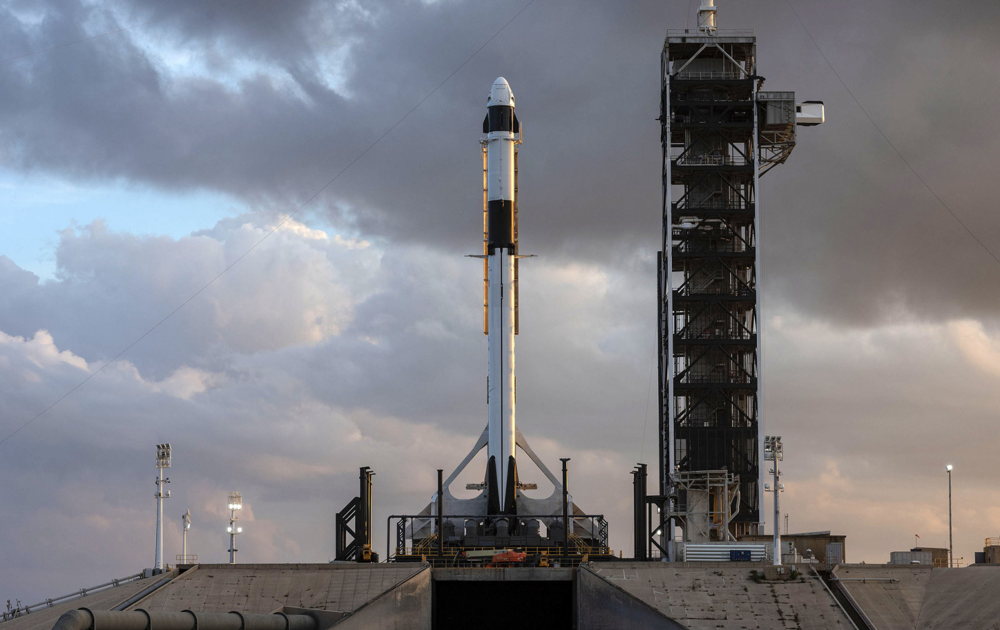

FALCON 9
El Falcon 9 es un vehículo de lanzamiento parcialmente reutilizable de dos etapas diseñado y fabricado por SpaceX. Usa como propelentes queroseno para cohetes (RP-1) densificado y oxígeno líquido (LOX). Su versión actual, el Falcon 9 Block 5, tiene una carga útil aproximada de 22 800 kg a órbita baja terrestre y de aproximadamente 8.300 kg a órbita de transferencia geosíncrona. La primera etapa es capaz de aterrizar para ser reutilizada en nuevas misiones, ya sea volviendo a tierra o sobre una nave dron. Mediante este cohete, SpaceX ofrece servicios como lanzamiento de satélites, y transporte de carga a la Estación Espacial Internacional (ISS). Actualmente, está trabajando en certificar el cohete, junto con su nueva nave Crew Dragon, para transportar astronautas de manera regular a la ISS.1
FALCON HEAVY
El Falcon Heavy (FH) ("Halcón Pesado"), anteriormente conocido como Falcon 9 Heavy, es un vehículo de lanzamiento espacial super pesado reutilizable, diseñado y fabricado por SpaceX. El Falcon Heavy es una variante del lanzador Falcon 9 y consiste en un núcleo de cohete Falcon 9 reforzado, con otros dos núcleos de Falcon 9 como cohetes aceleradores adicionales.5. Esto aumentará la carga útil de la órbita terrestre baja (OTB) a 64 toneladas, comparado con 22,8 toneladas de un Falcon 9. Falcon Heavy fue diseñado desde el principio para llevar a los seres humanos al espacio, y permitiría misiones con tripulación a la Luna o Marte. Después de la investigación del fracaso de Falcon 9 CRS-7 en 2015, los repetidos retrasos en el desarrollo de cohetes, y dado un manifiesto de lanzamiento de Falcon 9 muy ocupado en 2016, el lanzamiento del primer Falcon Heavy tuvo lugar el 6 de febrero de 2018.6

DRAGON
La SpaceX Dragon es una nave espacial reutilizable, desarrollada por la empresa privada estadounidense SpaceX, capaz de llevar carga a la órbita baja terrestre (LEO). La cápsula tiene la capacidad de acoplarse a los segmentos no rusos de la Estación Espacial Internacional (ISS) y actualmente tiene un contrato con la NASA para reemplazar las operaciones de reabastecimiento y transporte de tripulaciones que antes realizaba la flota de transbordadores. El 22 de mayo de 2012, la cápsula fue lanzada desde Cabo Cañaveral con destino a la Estación Espacial Internacional, llevando suministros para la tripulación de astronautas. El 28 de octubre de 2012 amerizó en el océano Pacífico, completando exitosamente la primera misión privada de transporte a la ISS de la historia.1La nave espacial Dragon, fue sustituida en sus variantes DragonCargo y DragonCrew desde 2014.